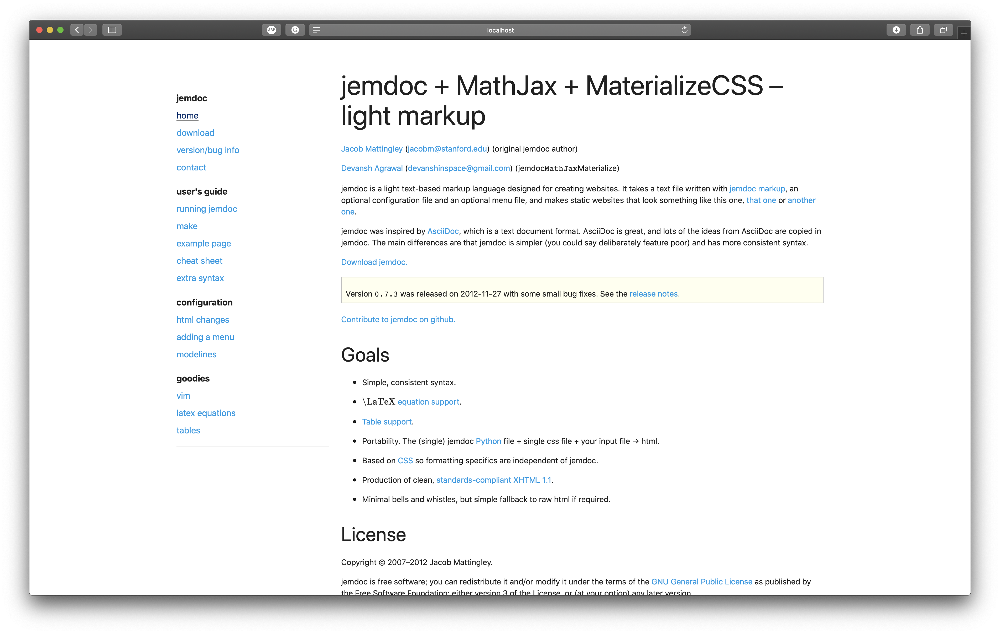

Devansh Agrawal (devanshinspace@gmail.com) (jemdocMathJaxMaterialize)
jemdoc is a light text-based markup language designed for creating websites. It takes a text file written with jemdoc markup, an optional configuration file and an optional menu file, and makes static websites that look something like this one, that one or another one.
jemdoc was inspired by AsciiDoc, which is a text document format. AsciiDoc is great, and lots of the ideas from AsciiDoc are copied in jemdoc. The main differences are that jemdoc is simpler (you could say deliberately feature poor) and has more consistent syntax.
Screenshot
Contribute to jemdoc+MathJax+Materialize on github.
Simple, consistent syntax.
\(\mbox{\LaTeX}\) equation support.
Portability. The (single) jemdoc Python file + single css file + your input file → html.
Based on CSS so formatting specifics are independent of jemdoc.
Production of clean, standards-compliant XHTML 1.1.
Minimal bells and whistles, but simple fallback to raw html if required.
Copyright © 2007–2012 Jacob Mattingley.
jemdoc is free software; you can redistribute it and/or modify it under the terms of the GNU General Public License as published by the Free Software Foundation; either version 3 of the License, or (at your option) any later version.
jemdoc is distributed in the hope that it will be useful, but WITHOUT ANY WARRANTY; without even the implied warranty of MERCHANTABILITY or FITNESS FOR A PARTICULAR PURPOSE. See the GNU General Public License for more details.